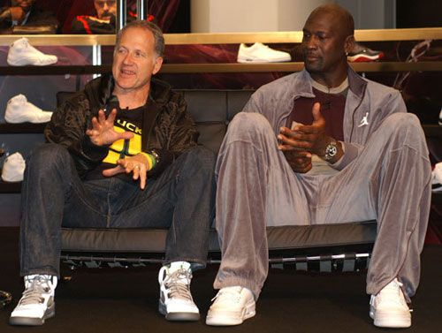
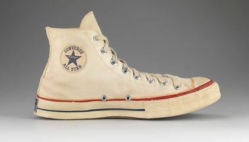
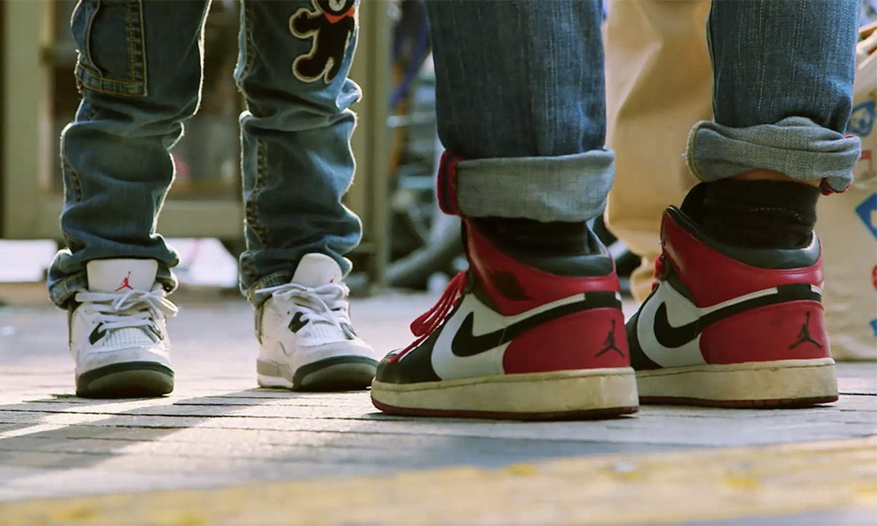
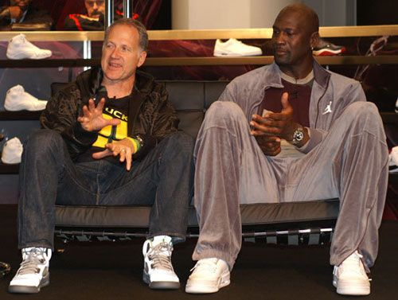
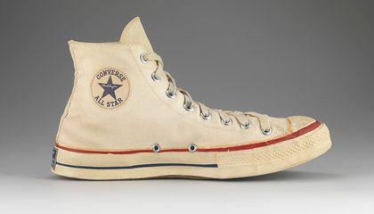
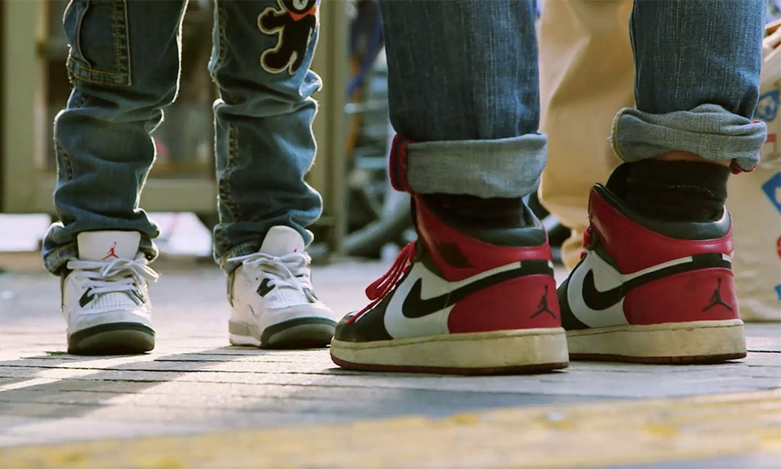

The sneaker community has a great impact on today's society. With the sneaker industry making over 55 billion dollars a year. It was Michael Jordan's decision to sign with Nike prior to the 1984-85 NBA season that shocked the sneaker world into a Frankenstein-like monster of leather and laces. Many celebrities started wearing the iconic basketball shoes along with other iconic sneakers such as the Converse Chuck Taylor's, Reebok's, New Balances.
 





As the jordan signature shoe line was evolving with sneaker designer Tinker Hatfield, more and more people started to wear the shoes, on court, on the street, skateboarding, it was starting to become the thing that everyone had. Their is so much history in the rise of sneaker culture and so many people and sneakers that changed the game for athletes and everyday people. People started buying and selling sneakers and skate clothes tying in basketball culture and skate culture. People buy things if they are "hype" meaning they look cool, feel cool and motivate you. All this history made something you put on your feet a culture and sneakerheads and hypebeasts spend and make hundreds of thousands of dollars on.
Now nike and jordan brand are collaborating with high end brands such as dior, OFF-WHIte and more to create sneakers that sell out in an instant and resell for sometimes 500% of their original value.